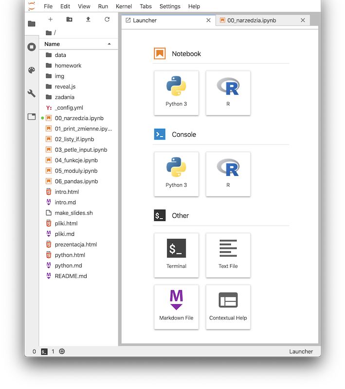
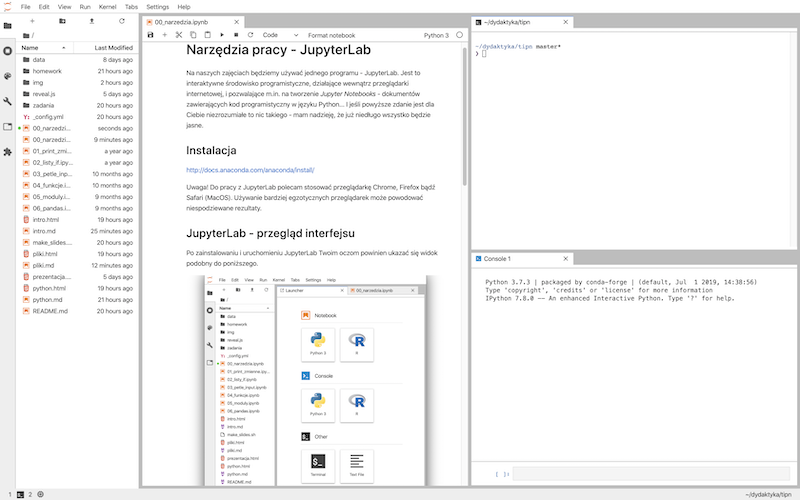

Narzędzia
JupyterLab
Na naszych zajęciach będziemy używać jednego programu - JupyterLab. Jest to interaktywne środowisko programistyczne, działające wewnątrz przeglądarki internetowej, i pozwalające m.in. na tworzenie Jupyter Notebooks - dokumentów zawierających kod programistyczny w języku Python... I jeśli powyższe zdanie jest dla Ciebie niezrozumiałe to nic takiego - mam nadzieję, że już niedługo wszystko będzie jasne.
Instalacja
Uwaga! Do pracy z JupyterLab polecam stosować przeglądarkę Chrome, Firefox bądź Safari (MacOS). Używanie bardziej egzotycznych przeglądarek może powodować niespodziewane rezultaty.
Lokalnie
Aby w prosty sposób uzyskać stabilne i dobrze "wyposażone" środowisko programistyczne, najlepiej jest zainstalować Anaconda Distribution. Wybierz wersję Python 3.x żeby uzyskać dostęp do aktualnego Pythona. Proces instalacji dla różnych systemów operacyjnych opisany jest szczegółowo tutaj: http://docs.anaconda.com/anaconda/install/. Po zainstalowaniu należy uruchomić aplikację Anaconda Navigator, i stamtąd wybrać JupyterLab.
Uwaga! Anaconda Distribution to duży i wymagający pakiet oprogramowania. Aby wszystko dobrze działało potrzebujesz ok. 3GB wolnego miejsca na dysku i w miarę szybki komputer. Pamiętaj aby zainstalować aktualizacje systemu operacyjnego!.
Zdalnie
Jeszcze prostszym sposobem na dostęp do gotowego, skonfigurowanego środowiska programistycznego jest skorzystanie z jednego z serwisów online. Dobrze sprawdza się na przykład serwis http://notebooks.ai. Po założeniu darmowego konta uzyskujemy 1GB miejsca na serwerze na projekty wykorzystujące JupyterLab, Pythona i kilka najbardziej popularnych modułów.
JupyterLab - przegląd interfejsu
Po zainstalowaniu i uruchomieniu JupyterLab Twoim oczom powinien ukazać się widok podobny do poniższego.

W górnej części okna widzimy klasyczne menu, ze znanymi z innych programów pozycjami File, Edit czy Help. Z lewej widzimy boczny panel, który zawiera bardzo ważny element - przeglądarkę plików (file browser). Służy ona do przeglądania, otwierania, kopiowania, zmieniania nazw plików. Powyżej okna przeglądarki znajdują się przyciski, które będą przydatne. Są to w kolejności:
- New Launcher: otwiera kartę launcher, służącą do tworzenia nowych kart
- New folder: tworzy nowy folder
- Upload files: pozwala dodawać do bierzącego folderu nowe pliki przy użyciu interfejsu przeglądarki
- Refresh file list: odświeża listę plików w przeglądarce (przydatne, gdy np. nasz program tworzy nowe pliki)
Poniżej tych przycisków widzimy ścieżkę dostępu do aktualnie wybranego folderu.
Pamiętaj, że przytrzymanie kursora kilka sekund nad jakimś elementem interfejsu spowoduje wyświetlenie podpowiedzi.

Launcher i karty
Launcher jest kartą, która służy do tworzenia nowych kart. Możemy za jego pomocą utworzyć nowy notebook (o czym zaraz). Możemy też utworzyć nową konsolę (Console - Python 3), okno terminala (Terminal) bądź plik tekstowy (Text file). Kliknięcie na dowolny przycisk w launcherze powoduje utworzenie nowej karty z daną zawartością. Karty można dowolnie przesuwać i ustawiać wewnątrz interfejsu, poprzez przeciąganie ich tytułów w rożne miejsca. Poniższy przykład pokazuje jedno z możliwych ustawień interfejsu.

Pierwszy notebook
Jupyter Notebook do dokument, który składa się z komórek (cells), przechowywujących różne rodzaje danych, tj:
- Tekst (wykorzystując Markdown, o czym zaraz)
- Kod w różnych językach programowania (m.in. w Pythonie)
- Wyniki działania tego kodu
- Grafiki, wzory matematyczne
- Media (audio/video)
Notebooki mają rozszerzenie .ipynb (skrót od IPython Notebook, dawnej nazwy Jupytera) i tworzone są przy pomocy JupyterLab. Stanowią bardzo proste i poręczne narzędzie do programowania interaktywnego. Znajdują wykorzystanie głównie w raportowaniu wyników badań naukowych (m.in. były wykorzystane przez naukowców z LIGO, odkrywców fal grawitacyjnych ). Więcej przykładowych notebooków można znaleźć tutaj lub tutaj. Tworzone są rozbudowane kursy a nawet książki, będące de facto kolekcjami notebooków (np. darmowy kurs Pythona, podręcznik Principles and Techniques of Data Science.
Utwórzmy nasz pierwszy Jupyter Notebook. W launcherze wybierz przycisk Python 3 (w sekcji Notebook):

W nowej karcie otworzy się pusty notebook, zatytułowany Untitled.ipynb. Pojawi się też nowy element w przeglądarce po lewej stronie - JupyterLab utworzył nam nowy plik. Najpierwsz zmieńmy jego nazwę. Naciśnij prawym przyciskiem myszy na Untitled.ipynb w przeglądarce - pojawi się menu kontekstowe, z którego wybierz Rename. W okienku wpisz nową nazwę, np. pierwszy_nb.ipynb.
Teraz wprowadźmy zawartość. W naszym notebooku jak na razie jest jedna, pusta komórka (cell). Dodatkowo, jest ona typu Code (służy do wprowadzania kodu programistycznego). Wiemy o tym, ponieważ po jej lewej stronie znajduje się symbol [ ]:, zaś w pasku narzędzi powyżej napisane jest Code. Naciśnij na ten napis a pojawi się lista rozwijalna. Z tej listy wybierz Markdown. Symbol [ ]: zniknie a Ty możesz napisać w komórce dowolny tekst. Po wpisaniu tekstu naciśnij kombinację klawiszy SHIFT + ENTER. Voila! Komórka wyświetliła prosty napis. Całość powinna wyglądać jakoś tak: